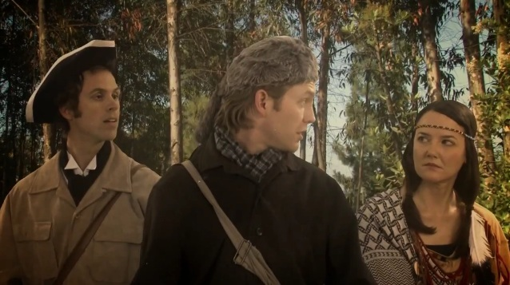

FOR IMMEDIATE RELEASE
Press Contact:
Lewis and Clark:
The Real Story Behind the Heroes
LOS ANGELES,
August 22, 2011 –
LOST MOON RADIO releases a new 3-part sketch series today – “Heroes of History: The Story of Lewis and Clark.” Watch as the Corps of Discovery is given the comedic twist its always deserved in this hilarious take on the American icons and their epic journey. Only LOST MOON RADIO dares to ask the question, “Just how crazy would you go if you were stuck with the same person for two years in the middle of the wilderness?” Head to lostmoonradio.com/lewisandclark to find the answer.
Recently named LA Weekly’s “Best of the Hollywood Fringe,” LOST MOON RADIO is a group of writers, performers, artists, and musicians who create dry comedy and wet rock ‘n roll through live performances, videos, audio tracks, and general tomfoolery. Critics describe LOST MOON RADIO as “The Groundlings but with a better batting average...Lost Moon Radio shows the potential to be the live radio show for the new millennium generation” and “Off the charts. A show like SNL should just scoop up the entire cast of Lost Moon Radio. It would be a hundred times better." For more information on LOST MOON RADIO head to www.lostmoonradio.com.

“Heroes of History: the Lewis and Clark Story” Parts 1-3 were written by Frank Smith and Ryan Harrison, directed by Lauren Ludwig, shot by Dan Oster, and edited by Kevin Oeser, with visual effects by Dan Oster. The theme song was written by Michael Wells. Starring Ryan Harrison, Frank Smith, and Jen Burton.
# # # END # # #